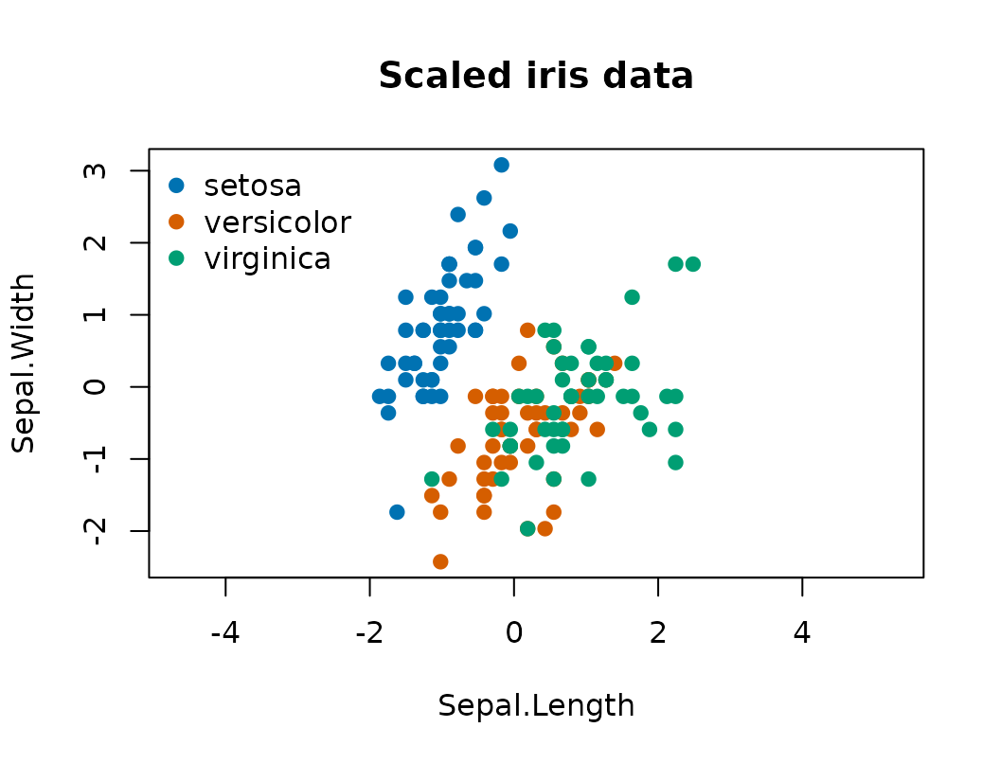

Preparing data and choosing sampler settings
Source:vignettes/data-preparation.Rmd
data-preparation.RmdBefore calling pgmm_rjmcmc(), the analyst must specify
the data orientation, scaling, missing-value handling, latent-factor
dimension, cluster range, and starting covariance model.
Matrix orientation
bpgmm expects a numeric matrix with variables in rows
and observations in columns. Many R data sets use the opposite
convention, so transpose after selecting numeric variables.
The package convention is
where row is variable and column is observation .
library(bpgmm)
#> bpgmm 1.3.4 loaded. If you use bpgmm in published work, please cite it with citation("bpgmm").
iris_numeric <- as.matrix(iris[, 1:4])
iris_labels <- as.integer(iris$Species)
dim(iris_numeric)
#> [1] 150 4
X <- t(iris_numeric)
dim(X)
#> [1] 4 150Rows now correspond to variables and columns correspond to observations.
rownames(X)
#> [1] "Sepal.Length" "Sepal.Width" "Petal.Length" "Petal.Width"
X[, 1:3]
#> [,1] [,2] [,3]
#> Sepal.Length 5.1 4.9 4.7
#> Sepal.Width 3.5 3.0 3.2
#> Petal.Length 1.4 1.4 1.3
#> Petal.Width 0.2 0.2 0.2Check finite numeric inputs
The sampler requires finite numeric values. Handle missing values before fitting. Common choices include complete-case filtering, domain-specific imputation, or fitting the model to a subset of variables with reliable measurements.
all(is.finite(X))
#> [1] TRUE
storage.mode(X)
#> [1] "double"Scale variables
Mixture models are sensitive to measurement scale. If variables are measured in different units, standardizing each variable is usually a sensible default. For each variable , the usual transformation is
X_scaled <- t(scale(t(X)))
round(rowMeans(X_scaled), 6)
#> Sepal.Length Sepal.Width Petal.Length Petal.Width
#> 0 0 0 0
round(apply(X_scaled, 1, sd), 6)
#> Sepal.Length Sepal.Width Petal.Length Petal.Width
#> 1 1 1 1The package does not scale internally because some scientific applications need the original measurement scale. Scaling should be an explicit analysis choice.
pgmm_rjmcmc() also centers the data internally before
sampling. On the centered scale the cluster-mean prior mean is
,
consistent with the augmented loading posterior in Supplement A.1.
Sampled means in the output are returned on the original scale.
Hyperprior defaults
The default symmetric hyperpriors are
d_vec = s_vec = c(1, 1, 1) with delta = 3 and
ggamma = 1. These control the gamma hyperpriors on
,
,
and
described in the model-and-sampler vignette.
Choose q_new
q_new is the latent-factor dimension assigned to newly
proposed clusters. It controls the dimension of the factor-analyzer part
of the covariance model. In the paper’s notation,
The package uses q_new as the
value for a newly created component.
Useful starting points:
-
q_new = 1for very small examples or when covariance structure should be simple. -
q_new = 2or3for moderate-dimensional data. - Larger values only when the number of variables and observations support the extra covariance flexibility.
The value should be smaller than the number of observed variables.
Choose m_range
m_range is the allowed cluster-number range. A wide
range gives RJMCMC more freedom, but also increases the model space.
Start with a scientifically reasonable range, then assess
sensitivity.
m_init <- 3
m_range <- c(1, 5)For data with a known reference label, such as iris, the
reference partition gives a simple check on the range. In unsupervised
applications, use domain knowledge and exploratory plots.
species_cols <- c("#0072B2", "#D55E00", "#009E73")
plot(
X_scaled[1, ], X_scaled[2, ],
col = species_cols[iris_labels],
pch = 19,
xlab = rownames(X_scaled)[1],
ylab = rownames(X_scaled)[2],
main = "Scaled iris data",
asp = 1
)
legend(
"topleft",
legend = levels(iris$Species),
col = species_cols,
pch = 19,
bty = "n"
)
Choose the starting covariance model
The three-letter model labels describe whether loading matrices and
noise covariances are shared across clusters. UUU is
flexible; CCC is more constrained. A flexible starting
model is often reasonable when using v_step = 1, because
the sampler can move across covariance structures.
The fitted covariance is always
but the label controls whether and are shared and whether is isotropic or diagonal.
model_to_constraint("UUU")
#> [1] 0 0 0
constraint_to_model(c(1, 1, 1))
#> [1] "CCC"A prepared call
The call below is not evaluated in the vignette because applied analyses should use longer chains and repeated runs. It records how the prepared objects enter the package interface.
fit <- pgmm_rjmcmc(
X = X_scaled,
m_init = m_init,
m_range = m_range,
q_new = q_new,
burn = 1000,
niter = 5000,
constraint = "UUU",
m_step = 1,
v_step = 1,
split_combine = 1,
verbose = FALSE
)
summarize_pgmm_rjmcmc(fit, true_cluster = iris_labels)Practical checklist
Before fitting:
- verify that
Xis numeric with variables in rows; - remove or impute missing and non-finite values;
- decide whether variables should be scaled;
- choose a scientifically plausible
m_range; - choose
q_newsmaller than the number of variables; - use multiple chains for applied analyses.